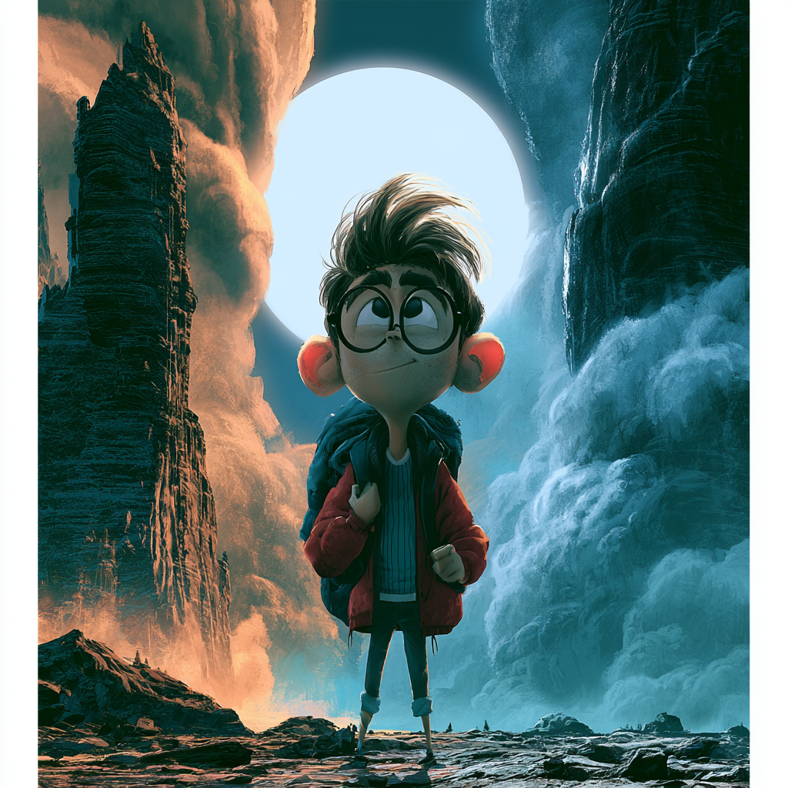

The Reading begins here
The next eight pages
are scripture.
Nothing else.
No ads. No jokes. No commentary. Genesis 28, printed whole.
Between Sundays · Issue 001Page 06

No ads. No jokes. No commentary. Genesis 28, printed whole.